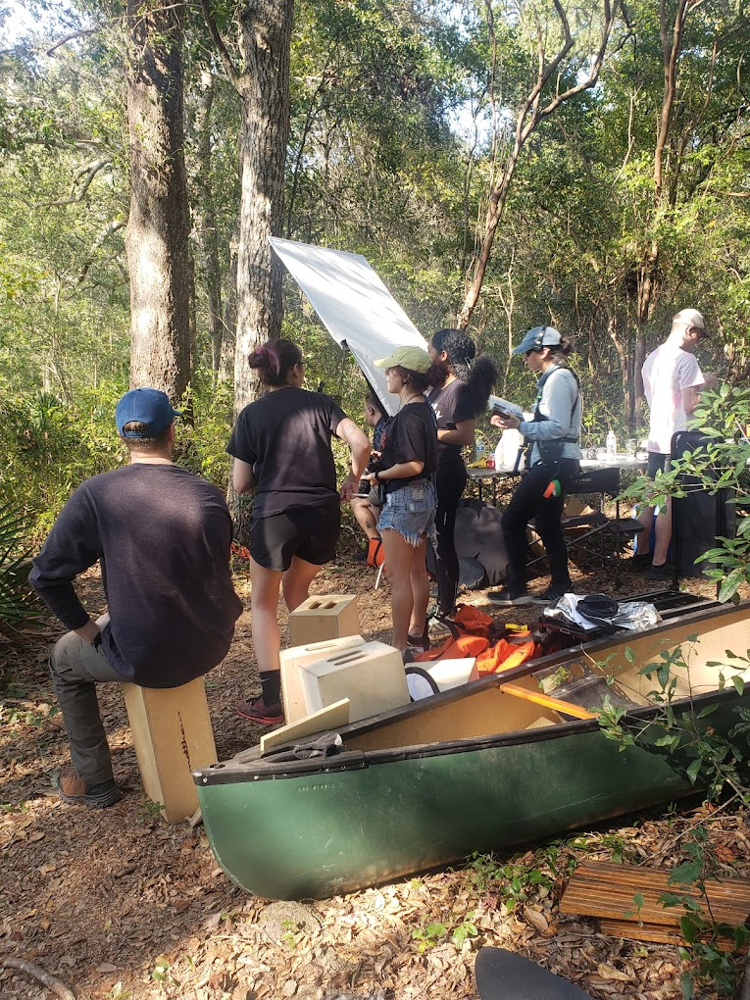

Gallery
Production Stills


Behind the Scenes



Director

Scott Bell is a Tallahassee-based filmmaker whose work explores the collision between speculative science fiction and deeply personal human stories. In 2016, he founded Cat Family Records, a nonprofit label and art collective that published zines, organized festivals, and supported emerging artists across North Florida. Now through Art Kid Media, he brings that same punk-rooted, DIY ethos to filmmaking: self-reliant, collaborative, and grounded in the belief that risk is essential to art. While Afterlife marks his directorial debut, he’s currently developing a feature set in present-day Tallahassee that continues his exploration of identity and meaning in an ever-changing world.